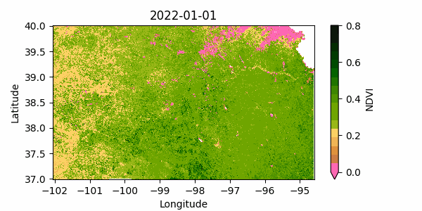

# Import and initialize GEE
import ee
import glob
import requests
import pandas as pd
from datetime import datetime, timedelta10 Animate image collection
When working with spatial data in the form of images spanning a period of time, animations are an effective way to showcase temporal and spatial changes across a region. Similar to a video, animations are composed of sequential frames and Google Earth Engine provides tools for creating and retrieving animations via URL. Alternatively, individual images can be downloaded for local processing, that enable the creation of animations using plotting libraries like Matplotlib. This tutorial focuses on the former approach, exploring how to leverage Google Earth Engine for creating an animation of changes in annual vegetation over the central U.S. Great Plains.
# Authenticated
#ee.Authenticate()
# Initialize
ee.Initialize()Example 1: Animation of vegetation dynamics in the cloud
Define animation area
# Define a rectangular region over the state of Kansas
# Rectangle coordinates: xMin, yMin, xMax, yMax
rect = ee.Geometry.Rectangle([[-102.5,36.5], [-94,40.5]]);# Select state boundary
# For countries you can use: FAO/GAUL_SIMPLIFIED_500m/2015/level1
# A site with country codes: http://www.statoids.com/wab.html
region = ee.FeatureCollection("TIGER/2018/States").filter(ee.Filter.eq('NAME', 'Kansas'))Retrieve vegetation product
# Select a collection from the available dataset
start_date = '2012-01-01'
end_date = '2022-01-01'
modis = ee.ImageCollection('MODIS/006/MOD13A2').filterDate(start_date, end_date)
collection = modis.select('NDVI').map(lambda img: img.clip(region))Get day of the year for each image
In this step we define a function that is applied to each image of the collection using the map() method. The function computes the day of the year based on the date, and adds this variable to each image as a property. Since each image of the collection remains the same, except that each image now includes the day of the year (doy), we overwrite the collection with the updated version of itself.
# Define function
def get_doy(img):
"""
Function that finds and adds the day of the year
to each image in the collection.
"""
doy = ee.Date(img.get('system:time_start')).getRelative('day', 'year')
return img.set('doy', doy)
# Apply the function to each image of the collection using the .map() method
collection = collection.map(get_doy)
# The `doy` is added to the properties of each image
# Use the following line to see the added property
# collection.getInfo()# Filter the complete collection to a single year of data e.g. 2021.
# We use one year as a dummy variable to compute the day of the year.
unique_doy = collection.filterDate('2021-01-01', '2022-01-01')# Define a filter that identifies which images from the complete collection
# match the DOY of the unique DOY variable.
# leftField == rightField
filt = ee.Filter.equals(leftField='doy', rightField='doy')# Define a join.
join = ee.Join.saveAll('doy_matches')
# Apply the join and convert the resulting FeatureCollection to an ImageCollection.
join_col = ee.ImageCollection(join.apply(unique_doy, collection, filt))Reduce all images for a given DOY pixel-wise.
# Define median reducer for images of the same DOY
def apply_median(img):
"""
Function that computes the pixel-wise median
for all images matching a given DOY
"""
doy_col = ee.ImageCollection.fromImages(img.get('doy_matches'))
return doy_col.reduce(ee.Reducer.median()).multiply(0.0001)
# Apply function for each DOY and for all images matching a given DOY
composite = join_col.map(apply_median)Create animation
# Define function that handles the visuals (paint adds the boundary,
# which is a assigned a value (-0.1) relative to the other pixels (so a low value means red here).
def animate(img):
cmap = ['black','FFFFFF', 'CE7E45', 'DF923D', 'F1B555', 'FCD163', '99B718', '74A901',
'66A000', '529400', '3E8601', '207401', '056201', '004C00', '023B01',
'012E01', '011D01', '011301']
frame = img.paint(region, -0.1, 2).visualize(min=-0.1, max=0.8, palette=cmap)
return frame
# Map the function to each image
animation = composite.map(animate)# Animation options
animationOptions = {'region': rect, # Selected region on the map
'dimensions': 600, # Size of the animation
'crs': 'EPSG:3857', # Coordinate reference system
'framesPerSecond': 6 # Animation speed
}# Render the GIF animation in the console.
print(animation.getVideoThumbURL(animationOptions))https://earthengine.googleapis.com/v1alpha/projects/earthengine-legacy/videoThumbnails/dab1527ad8bdb39bc2937c68ffaa4f5a-444f7489b454a5e458a7b3773c598bee:getPixels# Right click on the generated GIF image in the browser and select "save image as" to download it.Example 2: Animation of vegetation dynamics in local disk
This option requires downloading the images to the local drive and creating the animation ourselves, but it provides with the greatest flexibilty to edit the resulting animation.
# Import additional modules
import xarray as xr
import matplotlib.pyplot as plt
import matplotlib.animation as animation
from matplotlib import colors# Define function to save images to the local drive
def save_geotiff(ee_image, filename, crs, scale, geom, bands=[]):
"""
Function to save images from Google Earth Engine into local hard drive.
"""
image_url = ee_image.getDownloadUrl({'region': geom,'scale':scale,
'bands': bands,
'crs': f'EPSG:{crs}',
'format': 'GEO_TIFF'})
# Request data using URL and save data as a new GeoTiff file
response = requests.get(image_url)
with open(filename, 'wb') as f:
f.write(response.content)
return print(f"Saved image {filename}")# Select
region = ee.FeatureCollection("TIGER/2018/States").filter(ee.Filter.eq('NAME', 'Kansas'))
# Create mask
mask = ee.Image.constant(1).clip(region).mask()# Define the time range
start_date = '2022-01-01'
end_date = '2022-12-31'
# Select MODIS Terra Vegetation Indices 16-Day Global 1km
modis = ee.ImageCollection("MODIS/061/MOD13A2").filterDate(start_date, end_date)
collection = modis.select('NDVI')
# Get the list of available image dates
get_date = lambda image: ee.Image(image).date().format('YYYY-MM-dd')
dates = collection.toList(collection.size()).map(get_date).getInfo()
print(dates)['2022-01-01', '2022-01-17', '2022-02-02', '2022-02-18', '2022-03-06', '2022-03-22', '2022-04-07', '2022-04-23', '2022-05-09', '2022-05-25', '2022-06-10', '2022-06-26', '2022-07-12', '2022-07-28', '2022-08-13', '2022-08-29', '2022-09-14', '2022-09-30', '2022-10-16', '2022-11-01', '2022-11-17', '2022-12-03', '2022-12-19']gif_folder = '../outputs/ndvi_gif_files'
if not glob.os.path.isdir(gif_folder):
glob.os.mkdir(gif_folder)for date in dates:
start_date = date
end_date = (datetime.strptime(start_date, '%Y-%m-%d') + timedelta(days=1)).strftime('%Y-%m-%d')
ndvi_img = ee.ImageCollection('MODIS/006/MOD13A2').filterDate(start_date, end_date).first()
ndvi_img = ndvi_img.multiply(0.0001).clip(region).mask(mask)
filename = f"{gif_folder}/ndvi_{date}.tiff"
try:
save_geotiff(ndvi_img, filename, crs=4326, scale=1000, geom=region.geometry(), bands=['NDVI'])
except:
print(f"Trouble loading image {filename}. Skipping this image.")Saved image ../outputs/ndvi_gif_files/ndvi_2022-01-01.tiff
Saved image ../outputs/ndvi_gif_files/ndvi_2022-01-17.tiff
Saved image ../outputs/ndvi_gif_files/ndvi_2022-02-02.tiff
Saved image ../outputs/ndvi_gif_files/ndvi_2022-02-18.tiff
Saved image ../outputs/ndvi_gif_files/ndvi_2022-03-06.tiff
Saved image ../outputs/ndvi_gif_files/ndvi_2022-03-22.tiff
Saved image ../outputs/ndvi_gif_files/ndvi_2022-04-07.tiff
Saved image ../outputs/ndvi_gif_files/ndvi_2022-04-23.tiff
Saved image ../outputs/ndvi_gif_files/ndvi_2022-05-09.tiff
Saved image ../outputs/ndvi_gif_files/ndvi_2022-05-25.tiff
Saved image ../outputs/ndvi_gif_files/ndvi_2022-06-10.tiff
Saved image ../outputs/ndvi_gif_files/ndvi_2022-06-26.tiff
Saved image ../outputs/ndvi_gif_files/ndvi_2022-07-12.tiff
Saved image ../outputs/ndvi_gif_files/ndvi_2022-07-28.tiff
Saved image ../outputs/ndvi_gif_files/ndvi_2022-08-13.tiff
Saved image ../outputs/ndvi_gif_files/ndvi_2022-08-29.tiff
Saved image ../outputs/ndvi_gif_files/ndvi_2022-09-14.tiff
Saved image ../outputs/ndvi_gif_files/ndvi_2022-09-30.tiff
Saved image ../outputs/ndvi_gif_files/ndvi_2022-10-16.tiff
Saved image ../outputs/ndvi_gif_files/ndvi_2022-11-01.tiff
Saved image ../outputs/ndvi_gif_files/ndvi_2022-11-17.tiff
Saved image ../outputs/ndvi_gif_files/ndvi_2022-12-03.tiff
Saved image ../outputs/ndvi_gif_files/ndvi_2022-12-19.tiff
Note
In the method .filterDate(start_date, end_date) the start date is inclusive, but the end date is exclusive.
# Read the list of images
images = glob.glob(f"{gif_folder}/*.tiff")
images.sort()# Paletter of colors for the Enhanced Vegetation Index
hex_palette = ['#FF69B4','#CE7E45', '#DF923D', '#F1B555', '#FCD163', '#99B718', '#74A901',
'#66A000', '#529400', '#3E8601', '#207401', '#056201', '#004C00', '#023B01',
'#012E01', '#011D01', '#011301']
# Use the built-in ListedColormap function to do the conversion
cmap = colors.ListedColormap(hex_palette)
Colormap note
The first color of the palette is hot pink (‘#FF69B4’). The color was added to represent the lowest NDVI values, which are typically caused by snow on the ground during winter months.
# Create figure
fig, ax = plt.subplots(figsize=(6,3))
# Leave a bit more room at the bottom to avoid cutting the xlabel
fig.subplots_adjust(bottom=0.15)
# Create figure with axes and colorbar, which will remain fixed.
raster = xr.open_dataarray(images[0]).squeeze()
raster.plot.imshow(ax=ax, cmap=cmap, add_colorbar=True,
cbar_kwargs={'label':'NDVI'},vmin=0, vmax=0.8)
def animate(index):
"""
Function that creates each frame.
"""
# Read geotiff image with xarray
raster = xr.open_dataarray(images[index]).squeeze()
# Clear axes and draw new objects (without colorbar)
# Force vmin and vmax to keep the same range of values as the colorbar
ax.clear()
raster.plot.imshow(ax=ax, cmap=cmap, add_colorbar=False, vmin=0, vmax=0.8)
ax.set_title(images[index][-15:-5])
ax.set_xlabel('Longitude')
ax.set_ylabel('Latitude')
plt.tight_layout()
return ax
# Avoid displaying the first figure
plt.close()
# Save animation as .gif
ani = animation.FuncAnimation(fig, animate, len(images),interval=250)
ani.save('../outputs/ndvi_animation.gif', writer='pillow') <Figure size 640x480 with 0 Axes>Here is the resulting gif. Note that during the winter the image occasionally shows some areas with snow on the ground (look for reddish patches). You can display it in your notebook using the following html code:
<img src="../outputs/ndvi_animation.gif" alt="drawing" width="650"/>
Example 3: Soil moisture dynamics
# Since the product is available every 3 hours, define one month only
# to avoid running hitting the GEE memory limit
start_date = '2023-01-01'
end_date = '2023-01-31'
# Select SMAP Level 3 layer at 9-km spatial resolution
smap = ee.ImageCollection('NASA/SMAP/SPL4SMGP/007')
# Get the list of available image dates
get_date = lambda image: ee.Image(image).date().format('YYYY-MM-dd HH:mm:SS')
collection = smap.filterDate(start_date, end_date)
dates = collection.toList(collection.size()).map(get_date).getInfo()
print(len(dates))
print(dates[0:10])240
['2023-01-01 01:30:00', '2023-01-01 04:30:00', '2023-01-01 07:30:00', '2023-01-01 10:30:00', '2023-01-01 13:30:00', '2023-01-01 16:30:00', '2023-01-01 19:30:00', '2023-01-01 22:30:00', '2023-01-02 01:30:00', '2023-01-02 04:30:00']smap_gif_folder = '../outputs/smap_gif_files'
if not glob.os.path.isdir(smap_gif_folder):
glob.os.mkdir(smap_gif_folder)# Use pandas to create range of dates
dates = pd.date_range('2023-01-01', '2023-12-31', freq='7D')
datesDatetimeIndex(['2023-01-01', '2023-01-08', '2023-01-15', '2023-01-22',
'2023-01-29', '2023-02-05', '2023-02-12', '2023-02-19',
'2023-02-26', '2023-03-05', '2023-03-12', '2023-03-19',
'2023-03-26', '2023-04-02', '2023-04-09', '2023-04-16',
'2023-04-23', '2023-04-30', '2023-05-07', '2023-05-14',
'2023-05-21', '2023-05-28', '2023-06-04', '2023-06-11',
'2023-06-18', '2023-06-25', '2023-07-02', '2023-07-09',
'2023-07-16', '2023-07-23', '2023-07-30', '2023-08-06',
'2023-08-13', '2023-08-20', '2023-08-27', '2023-09-03',
'2023-09-10', '2023-09-17', '2023-09-24', '2023-10-01',
'2023-10-08', '2023-10-15', '2023-10-22', '2023-10-29',
'2023-11-05', '2023-11-12', '2023-11-19', '2023-11-26',
'2023-12-03', '2023-12-10', '2023-12-17', '2023-12-24',
'2023-12-31'],
dtype='datetime64[ns]', freq='7D')# Only use weekly moisture levels to avoid retrieving tons of images
for date in dates:
start_date = date.strftime('%Y-%m-%d')
end_date = (date + pd.Timedelta('1D')).strftime('%Y-%m-%d')
# Request data and create average of all images for that day
smap_img = smap.filterDate(start_date, end_date) \
.reduce(ee.Reducer.mean()).multiply(100).clip(region).mask(mask)
try:
# Creaoutput file name
filename = f"{smap_gif_folder}/smap_{start_date}.tiff"
# Note that the band name has `mean` appended since that is the reducer we used
# I also donwscaled the map to 1 km resolution from 9 km
save_geotiff(smap_img, filename, crs=4326, scale=9000,
geom=region.geometry(), bands=['sm_profile_mean'])
except:
print(f"Trouble loading image {filename}. Skipping this image.")
Note
In the method .filterDate(start_date, end_date) the start date is inclusive, but the end date is exclusive.
# Read the list of images
images = glob.glob(f"{smap_gif_folder}/*.tiff")
images.sort()# Define colormap
cmap = 'Spectral'
# Create figure
fig, ax = plt.subplots(figsize=(6,3))
# Leave a bit more room at the bottom to avoid cutting the xlabel
fig.subplots_adjust(bottom=0.15)
# Create figure with axes and colorbar, which will remain fixed.
raster = xr.open_dataarray(images[0]).squeeze()
raster.plot.imshow(ax=ax, cmap=cmap, add_colorbar=True,
cbar_kwargs={'label':'VWC (%)'}, vmin=0, vmax=40)
def animate(index):
"""
Function that creates each frame.
"""
# Read geotiff image with xarray
raster = xr.open_dataarray(images[index]).squeeze()
# Clear axes and draw new objects (without colorbar)
# Force vmin and vmax to keep the same range of values as the colorbar
ax.clear()
raster.plot.imshow(ax=ax, cmap=cmap, add_colorbar=False, vmin=0, vmax=40)
ax.set_title(images[index][-15:-5])
ax.set_xlabel('Longitude')
ax.set_ylabel('Latitude')
plt.tight_layout()
return ax
# Avoid displaying the first figure
plt.close()
# Save animation as .gif
ani = animation.FuncAnimation(fig, animate, len(images), interval=250)
ani.save('../outputs/smap_animation.gif', writer='pillow') <Figure size 640x480 with 0 Axes>